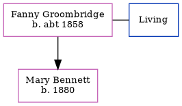

Fanny Elizabeth Bennett (née Groombridge) c1858 -
[ Home ] | [ Calendar ] | [ Surnames Index ] | [ Family History ]Fanny Groombridge, the wife of Henry Bennett (the three times great-uncle of Nigel Horne), was born in Eythorne, Kent, England <i>c.</i> 1858<span class="citation">1,2</span> and married Henry (an agricultural laborer with whom she had 1 child, Mary J) in Eastry, Kent, England around Nov 1878<span class="citation">3</span>. On Apr 3, 1881, she lived at Wenderton Cottages, Wingham, Kent<span class="citation">4</span>.
Children
- Mary J was born in 1880
Citations
- 1881 England Census Online publication - Provo, UT, USA: The Generations Network, Inc., 2004. 1881 British Isles Census Index provided by The Church of Jesus Christ of Latter-day Saints © Copyright 1999 Intellectual Reserve, Inc. All rights reserved. All use is subject to the
- 1901 England Census Online publication - Provo, UT, USA: The Generations Network, Inc., 2005.Original data - Census Returns of England and Wales, 1901. Kew, Surrey, England: The National Archives of the UK (TNA): Public Record Office (PRO), 1901. Data imaged from the National
- England & Wales Marriages 1837-2005 - Findmypast
- 1881 England, Wales & Scotland Census - Findmypast (was age 23 and the wife of the head of the household)
Family Tree
Generated by Ged2Site. Last updated on Jul 20, 2025